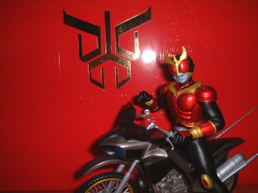

五号館
特撮の部屋

『仮面ライダークウガ』と言う作品を愛するあまりこのようなページも作ってしまいました。
『仮面ライダーアギト』『ウルトラマンコスモス』などの特撮作品専用掲示板です。それ以外の話題はノンジャンルのＢ館でお願いします。
逆にいえば特撮がテーマであればすべてＯＫです。
マニア向け。お子様向け。有名なもの。ディープなネタ。小ネタ。俳優さん・声優さんの話題。新作。旧作。テレビ。ビデオ。劇場など特撮がテーマであればすべてＯＫ。
ちなみに管理人がきっちり対応できるのは
『仮面ライダーＢｌａｃｋ』〜『仮面ライダーアギト』
『ウルトラセブン』（新旧）
『ウルトラマンティガ』『ウルトラマンダイナ』『ウルトラマンガイア』（いずれも劇場版含む）
『人造人間キカイダー』
これ以外だとレスは怪しいのですがそれでもよいと言うならお好きな特撮を存分に語ってください。
『仮面ライダークウガ』『仮面ライダーアギト』を振り返ります。
投票がなかったため削除されました。そのまま終了とします。なお一位は『仮面ライダークウガ』で３票（笑）でした。
『仮面ライダークウガ』において雄介が住み込みで働いていた『ポレポレ』のロケ地『るぽ』へ出向いてきました。
ウルトラマンコスモスのホームページです。